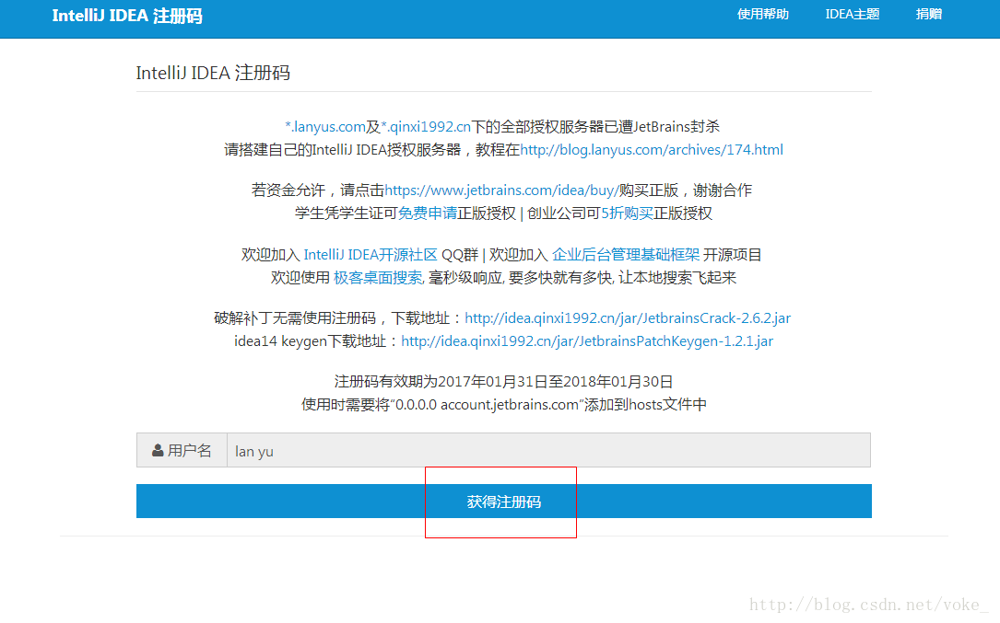

webstorm破译教程
方法一：注册码
访问 http://idea.lanyus.com/获取注册码

方法二：使用破解补丁
1.下载补丁：链接：https://pan.baidu.com/s/1koq2JURA07yYj7WW3zoEEQ 提取码：eklb
2.将补丁文件放入自己的webstorm安装目录的bin文件夹下。
3.打开bin目录下 WebStorm.exe.vmoptions 和 WebStorm64.exe.vmoptions，在文件最后加：-javaagent:D:/Program Files (x86)/JetBrains/WebStorm/bin/破解补丁名字.jar(此处为你的安装目录，请对号入座)
4.再次启动WebStorm，选择activation code，并将 -javaagent:你的WebStorm路径前缀/WebStorm/bin/破解补丁名字.jar写入点确定。